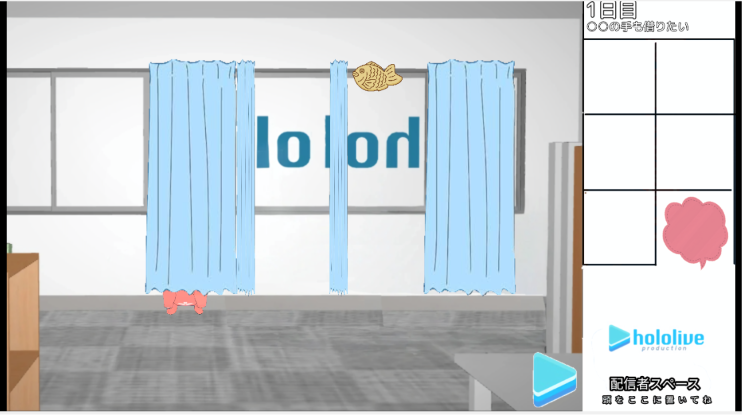
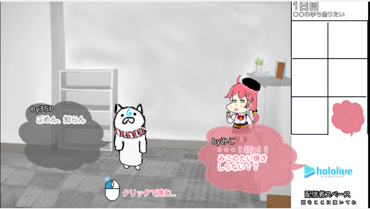
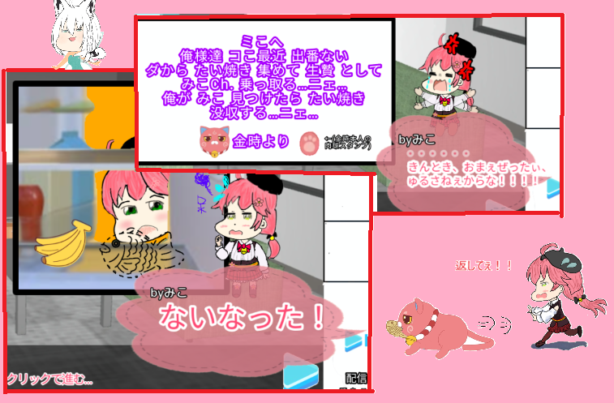

探索パートUI試作

アイテム管理システム

即死トラップデバッグ
このゲームは、「ママにゲーム隠された」(作 ハップ様)より
インスパイアを受けたホロライブ二次創作の脱出ギャグゲームです。
完成次第、偉大いなる始祖ハップ様に頭を下げてから、ホロインディーに応募します。応援してね☆

主人公はわれらが人気VTuber さくらみこ！！
配信を終え、おやつタイムに・・・と思っていたらみこのたい焼きがない！！！
ない！ない！！なーーーーーい！みこのたい焼きがぁ・・・( ；∀；)
近くには金時からの置手紙・・・こーれは許せないにぇ！！！
はたしてみこはたい焼きを取り返し金時の野望を止められるのか！？
|
探索パートUI試作 |
 アイテム管理システム |
 即死トラップデバッグ |